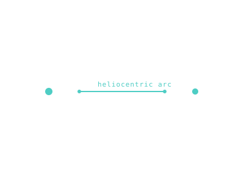

Patched Conics
Pretend gravity is one body at a time — the approximation that turns the unsolvable three-body problem into a chain of two-body Kepler problems you can actually solve.

101 · zoom in
Here's a dirty secret of orbital mechanics: the actual full physics — every body in the solar system pulling on every other — is mathematically unsolvable in any clean way. We have NO closed-form solution to the three-body problem, let alone the dozens-of-bodies real version. So how do mission planners get anything done?
They cheat. They pretend that, at any moment, only ONE body's gravity matters. Near Earth, only Earth pulls. Out in the cruise, only the Sun. Near Mars, only Mars. Each of those regions is called a sphere of influence, and inside each one the spacecraft flies a clean Keplerian conic. When the spacecraft crosses a boundary, you switch coordinate systems and start a new conic. Patched together, they form the trajectory. That's patched conics.
The math comes out a few percent off the truth — small enough that real missions plan with it as their first cut, then numerically refine for the launch. It's also small enough that Orrery can run all of this in your browser, in a Web Worker, fast enough to redraw the whole porkchop when you scrub the launch year. The whole simulator is built on this trick.
Real gravity is messy. A spacecraft cruising between Earth and Mars feels Earth's gravity, the Sun's gravity, Mars's gravity, plus everything else, all at once. The full math (the n-body problem) has no closed-form solution — only numerical integration. That's slow, fragile, hard to plan with.
Patched conics is the working compromise: declare a sphere of influence around each body. Inside Earth's sphere, only Earth's gravity matters; you fly a Keplerian arc around Earth. Cross the boundary into the heliocentric region, switch to a Sun-centred Kepler arc. Cross into Mars's sphere, switch again. Three Kepler problems, patched together at the boundaries.
It's wrong but useful. Errors at boundaries are small — a few percent of ∆v at most for cislunar work, less for heliocentric — and the math becomes tractable enough to fit in a Web Worker. Orrery's `/plan` porkchops are computed this way; so are the trajectories on `/fly`. Real flight planning at NASA uses the same approximation as the first cut, then refines numerically before launch.